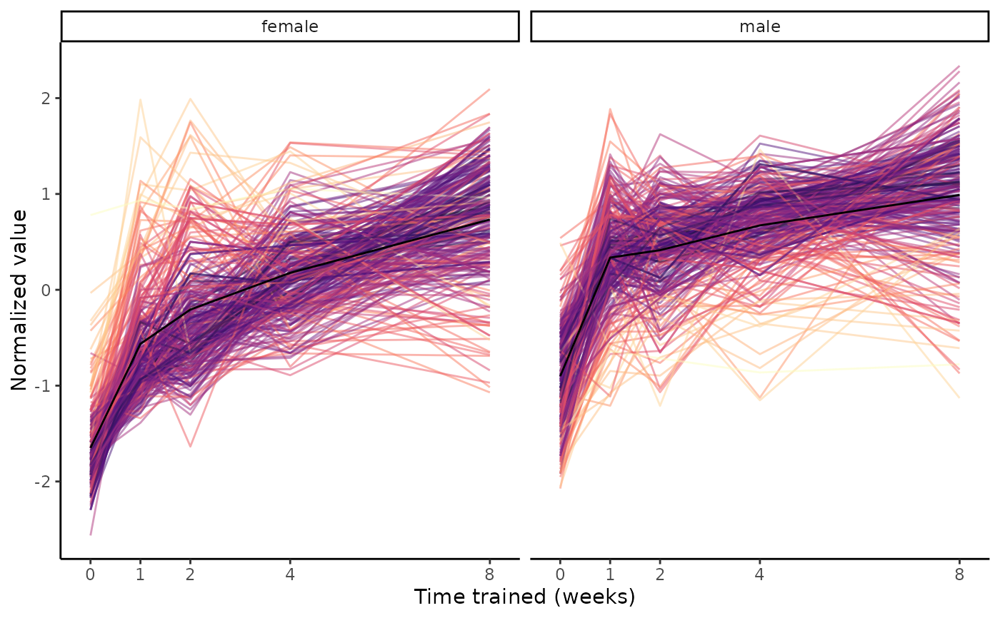
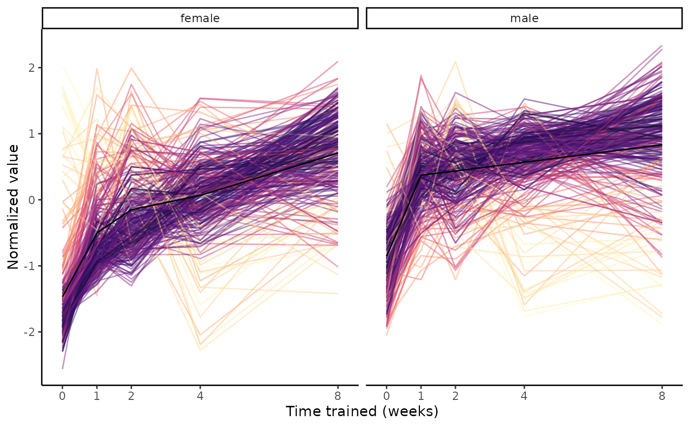

Plot group means of a set of features from normalized sample-level data.
Usage
plot_feature_trajectories(
features,
training_regulated_only = FALSE,
exclude_outliers = TRUE,
center = TRUE,
scale = TRUE,
title = NULL,
return_data = FALSE,
scratchdir = "."
)Arguments
- features
character vector of features to plot in the format 'MotrpacRatTraining6moData::ASSAY_ABBREV;MotrpacRatTraining6moData::TISSUE_ABBREV;feature_ID'
- training_regulated_only
bool, whether all input features are training-regulated at 5% FDR.
FALSEby default. IfTRUE, data is loaded from MotrpacRatTraining6moData::TRAINING_REGULATED_NORM_DATA instead of withload_sample_data(), which dramatically improves performance.- exclude_outliers
bool, whether to remove sample outliers specified by MotrpacRatTraining6moData::OUTLIERS.
TRUEby default.- center
bool, whether to center the trajectories.
TRUEby default.- scale
bool, whether to scale the trajectories.
TRUEby default.- title
optional character, plot title
- return_data
bool, whether to return the normalized sample-level data corresponding to
featuresinstead of a plot.FALSEby default.- scratchdir
character, local directory in which to download data from the web. Current working directory by default. Only relevant if
featuresincludes ATAC or METHYL features.
Value
a ggplot2::ggplot() object if return_data=FALSE or a data frame otherwise
Details
Note that while features in the format
'MotrpacRatTraining6moData::ASSAY_ABBREV;MotrpacRatTraining6moData::TISSUE_ABBREV;feature_ID'
are only given for training-regulated features in the data objects provided by
MotrpacRatTraining6moData, one could specify non-training-regulated features by
concatenating MotrpacRatTraining6moData::ASSAY_ABBREV, MotrpacRatTraining6moData::TISSUE_ABBREV,
and feature_ID for features of interest (semi-colon-separated).
Examples
# Pick largest cluster in gastrocnemius
clust = extract_tissue_sets("SKM-GN", k=1, add_week8=FALSE)
# Extract features
names(clust)
#> [1] "8w_F1_M1"
#> [2] "4w_F1_M1---8w_F1_M1"
#> [3] "1w_F1_M1->2w_F1_M1->4w_F1_M1->8w_F1_M1"
features = clust[["1w_F1_M1->2w_F1_M1->4w_F1_M1->8w_F1_M1"]]
plot_feature_trajectories(features)

# Since we're only considering training-regulated features in this example,
# set training_regulated_only to TRUE to make it slightly faster
plot_feature_trajectories(features, training_regulated_only=TRUE)

# Plot a mix of training-regulated and non-training-regulated features
# Note this takes longer because the original datasets are downloaded
features = c(features, "TRNSCRPT;SKM-GN;ENSRNOG00000000008")
plot_feature_trajectories(features)
#> Identifying data sets...
#> Compiling sample-level data...
#> ATAC_SKMGN_NORM_DATA_05FDR
#> METAB SKM-GN normalized data from METAB_NORM_DATA_FLAT
#> PHOSPHO_SKMGN_NORM_DATA
#> PROT_SKMGN_NORM_DATA
#> TRNSCRPT_SKMGN_NORM_DATA